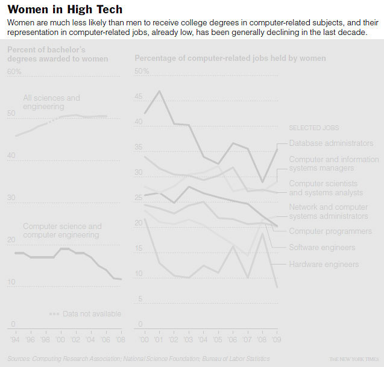
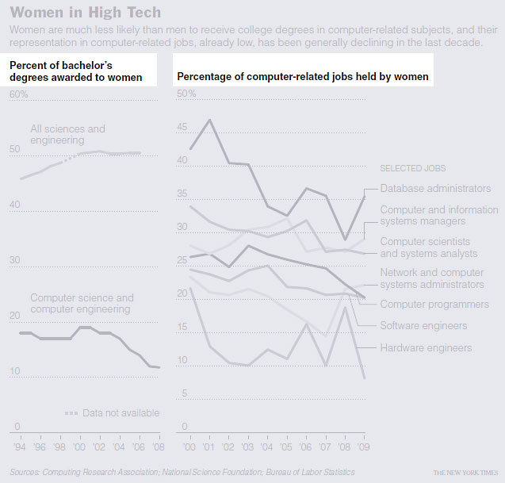
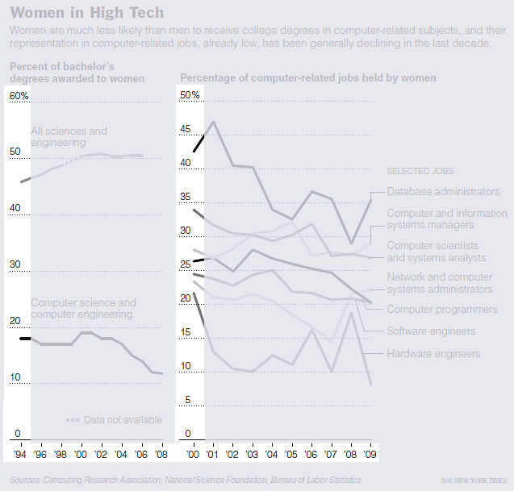
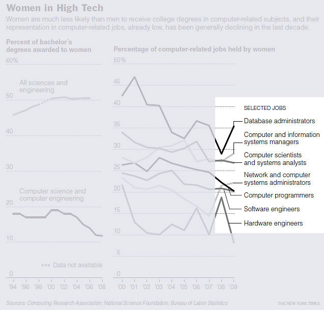
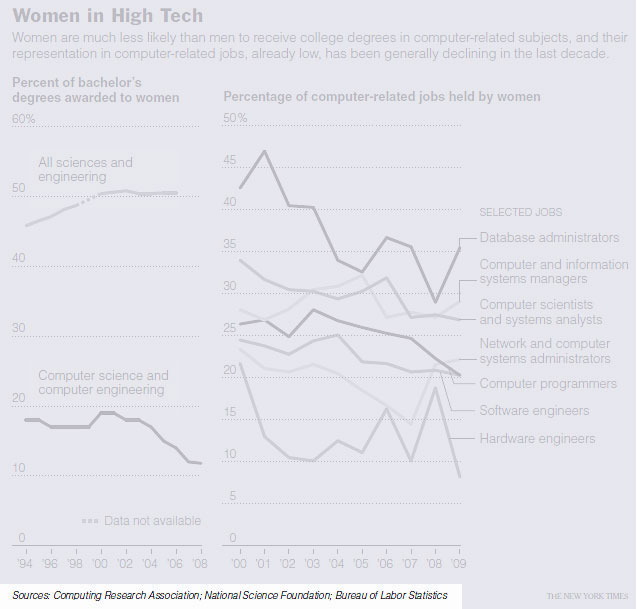
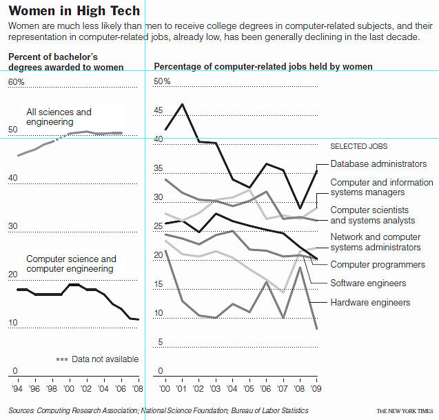
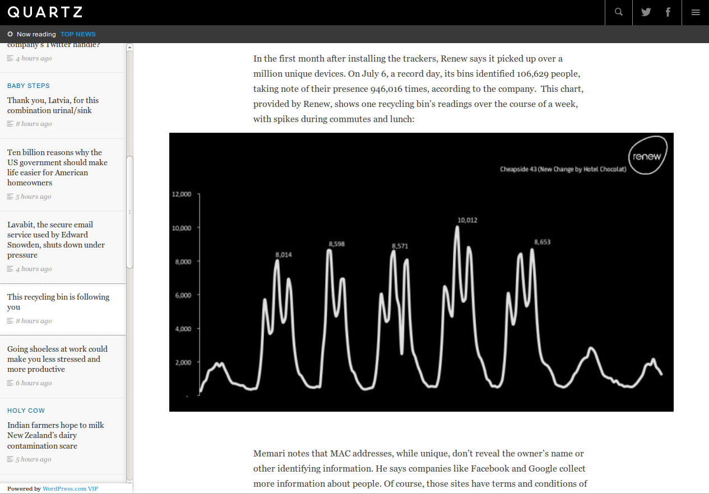
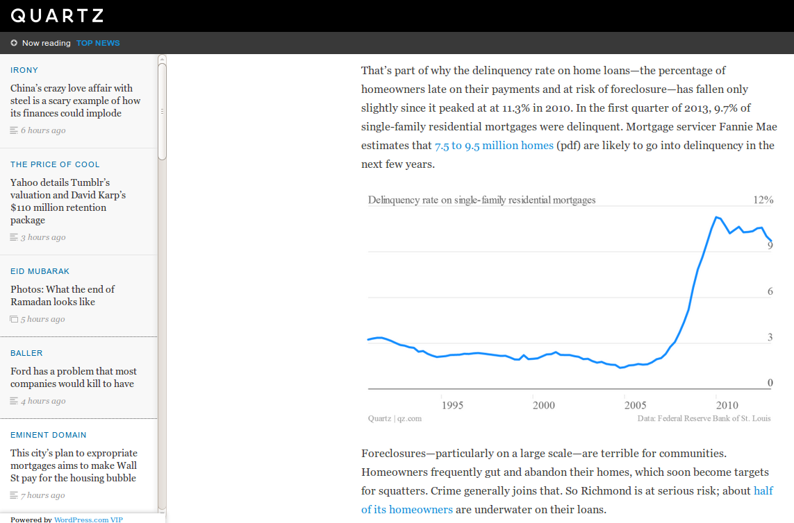
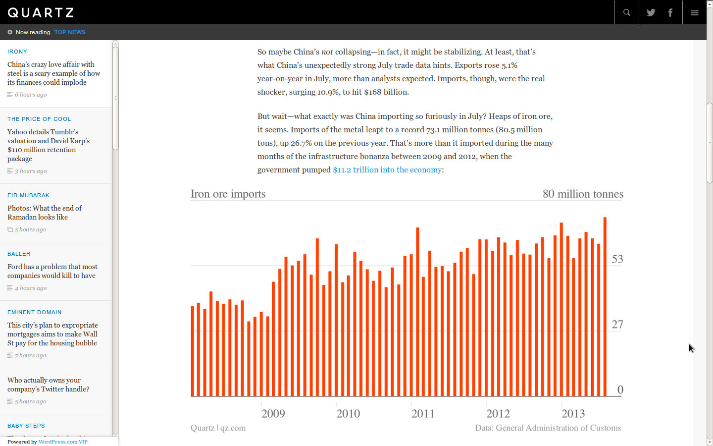

JustPublics@365
What is in a complete visualization?
Amanda Hickman / @amandabee
Out of the Loop in Silicon Valley
Claire Cain Miller, New York Times , April 17, 2010
This is the sort of chart you see all the time in the NY Times. This one in particular comes from a 2010 story about the women shut out of top jobs in Silicon Valley. As charts go, it isn't that special.

The title is clean and tight, and the text tells us what we're looking for in the charts that follow.

Chart titles cut right to the chase, so readers know what they're looking at.

Minimal, clear axis labels don't repeat information.

The legend doesn't have to be a color coded box, but it does have to identify each data series for the reader.

The credits are small, but they're clear.

Spacing isn't arbitrary.
The blue lines show 33% of the screen and 17% of the screen -- even when the alignment isn't obvious, someone is making very clear decisions about how to make the best and cleanest use of space. It makes a difference: readers can focus on the data if they aren't distracted by wonky alignment.
(From Bronx Court System Mired in Delays )
You see this pattern again and again. In this case, the charts appear smack in the middle of a longer story so the authors skip over the catchy title, but the rest of the pieces are here. Axis labels, highlights to guide us to the important data (180 days), titles for the charts that make it clear what we're looking at, a text summary that guides us to the author's conclusion. The only thing they don't provide is a source for their data. In this case, that is presumably b/c this is original research on their part. There are some problems here that we'll come back to later. We'll talk a little bit more about the technique they're using here later.
catchy (if cliched) title ("off the charts") followed by a concise summary ("Home Builders Spend Much More, While Governments Cut") 100 words for context tight chart titles; tight axis labels. clear highlights. The nitty gritty goes in a footnote: "Note: Figures are based on three-month averages of construction spending at seasonally adjusted annual rates, and are not adjusted for inflation. Housing spending includes costs of building new houses and apartments, but excludes money spent on improving existing homes. Public spending includes spending by federal, state and local governments." The source is clear (and the provenance isn't obliterated)

This Recycling Bin is Following You
Quartz organizes things a bit differently, but the information is always right there. Quartz publishes quite a few charts (They also published a great tool for generating charts like theirs: https://github.com/Quartz/Chartbuilder) -- this one is a story about garbage cans in London that can track your phone's MAC Address (the serial number on your phone). Still: if I want to know what this chart is about, I can gather that quickly from the preceding paragraph. I know exactly what I'm looking at. I'm not working. A bit more information would help -- we get from the text that we're seeing spikes at commute hours and lunch times, but where does one day start and end here? I have to guess that we're seeing these kind of lumpy forms for Sunday (at the start) and Saturday (at the end). I also happen to have loads of questions here, like why are Tuesday's readings w/out a morning commute? And why the deep dip on Wednesday?

This city's plan to expropriate mortgages aims to make Wall St pay for the housing bubble
Again, Quartz style is to set charts right into the story, so they aren't sidebars. As a result, they get away without adding context to the chart. That's acceptable, but only when the context is right there in the adjacent paragraph. Still: we know what we're looking at (delinquency rates), we know what the axes show, we know where they got the data from, and their decision to move the Y-axis to the right helps us focus on where the numbers are now -- what they really want to show us is that this rate used to hover around 3% and has now spiked and sometimes approaches 12%. That's all clear here. What I don't know at a glance is whether this is national data or data specific to Richmond, CA. I believe it is national data, but I don't know that for sure.

(From China's crazy love affair with steel is a scary example of how its finances could implode on Quartz)
But wait--what exactly was China importing so furiously in July? Heaps of iron ore, it seems. Imports of the metal leapt to a record 73.1 million tonnes (80.5 million tons), up 26.7% on the previous year. That's more than it imported during the many months of the infrastructure bonanza between 2009 and 2012, when the government pumped $11.2 trillion into the economy:
Again, the pieces are all here. We know this is about Chinese imports from the text of the article, we know where they go t the data (customs), we know that the Y-Axis is millions of tonnes of ore. In case you care, a t-o-n-n-e tonne is a metric ton -- 1000 kg (2204.6 lbs). A long ton, aka an imperial ton, is 2240 lbs.